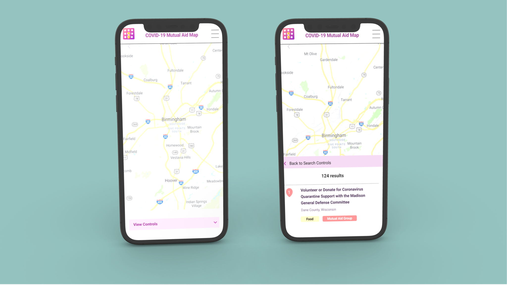

Reach4Help

Problem
Reach4Help is a non-profit organization dedicated to connecting users to a COVID-19 resource hub. The service provided was primarly browser-based, but when I joined the CEO was pushing to make a mobile version.
If a user selected too many options on the map filter, the controls menu would push past the viewpoint of the browser application. Our small team of 3 UXers needed to redesign the way the map filter functioned when making selections, for both the current problem in hand of the browser application but also for the future design of the mobile application.
The bug in hand was reported and discussed on this github issue.
Challenges faced
- Iterate on the existing map filter design and functionality of the browser application.
- Begin designing for the future mobile application's map filter.
- Design a visual representation for the two categories of filters ( "Organization Type" and "Services Offered" ) that not only works as intended, but is comprehensive to the user.
- Run A/B Testing to identify which features needed and which are extraneous in order to design an accurate MVP.
- Schedule usability tests for and get significant feedback from volunteers, who are all in different time zones and often have other responsibilities.
Timeline
October 2021-November 2021
Browser issue was fixed and deployed, however the website might be defunct at this point. See live site here.
The Mobile app, to my knowledge, was never released.
Solution
Make the filter selection process more intuitive so the results list remains visible. We also prioritized in keeping the map interface front and center, without sacrificing the clean UI or the ease in navigation and remaining consistent with the design and within the bounds of the design system for Reach4Help.
1. Research
A competitive audit was conducted using a variety of products, both indirect and direct competitors. We identified different examples of search and filtering menus within applications such as Google Maps and Uber Eats that could lend inspiration to solve the problem.


2. Pen to paper

Old Design for map hub (see above). Window would expand to the point where visibility was cut.

The next step after paper wires was to translate them to digital and create a very rough prototype for the first round of testing. Figma was used for both these efforts, though the first pass of this digitization was as simple as possible witth low fidelity mockups.


3.Higher Fidelity Screens
A breakdown can be seen of each screen in the application at a higher fidelity, which was constructed after the first round of testing.


Reflections
This was my very first experience in working with other designers and communicating with developers. It was a small project, more than anything an enhancement really, but it was still a good experience.